Ongoing
전문가 맥락 기반 Multi-Agent AI 기반 디지털 접근성 자동 진단 및 UI 자동 생성 기술 개발
공동연구책임자민관공동기술사업화(R&D) (KRW 100 million)Public–Private Joint Tech Commercialization R&D
Ongoing
공동연구책임자민관공동기술사업화(R&D) (KRW 100 million)Public–Private Joint Tech Commercialization R&D

Ongoing
연구책임자RISE 사업 (KRW 60 million)RISE Program, SeoulTech

Ongoing
연구책임자아이센스 (KRW 80 million)i-SENS

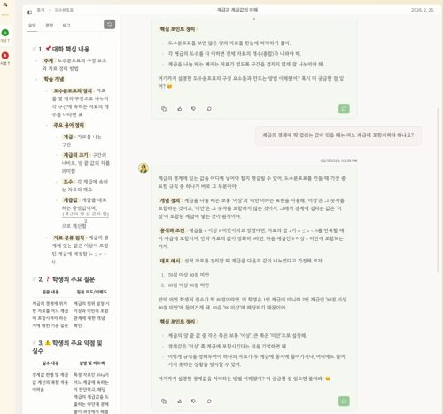
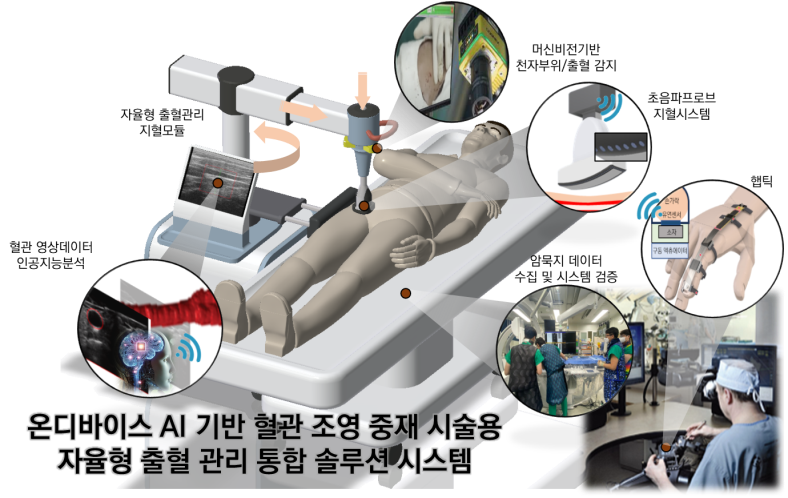
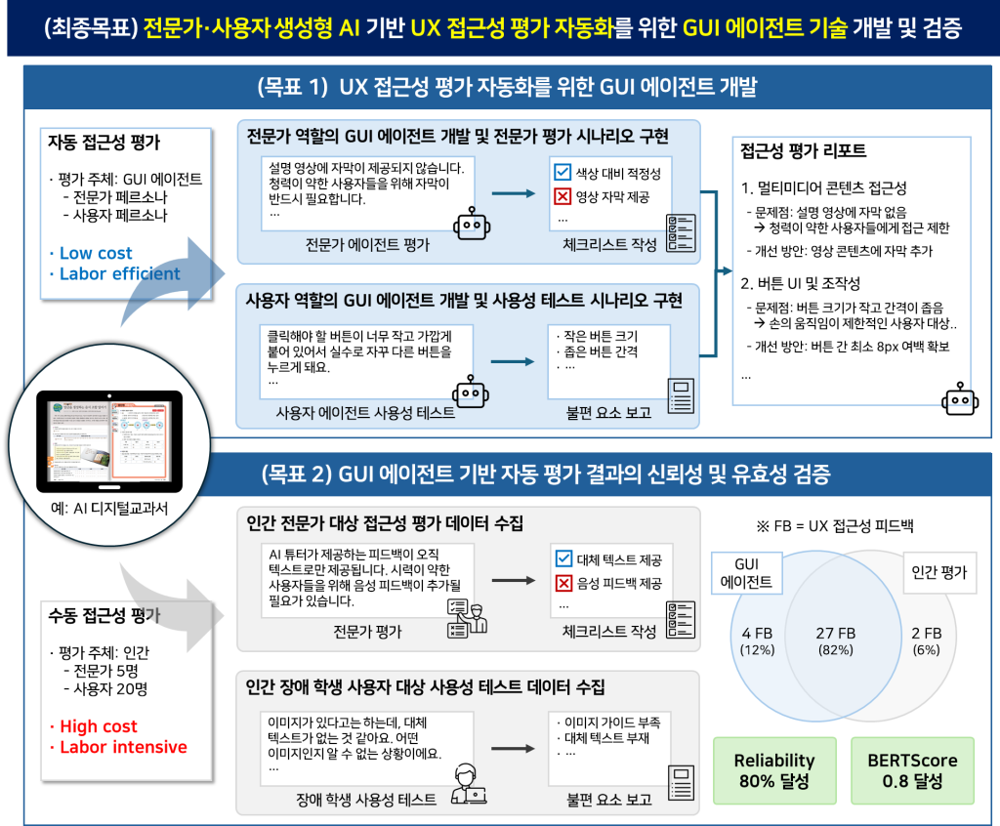
Ongoing
연구책임자한국연구재단 (KRW 100 million)National Research Foundation of Korea
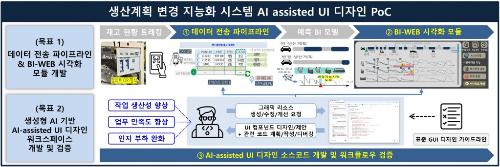
Completed
연구책임자주식회사 현대자동차 (KRW 51 million)Hyundai Motor Company
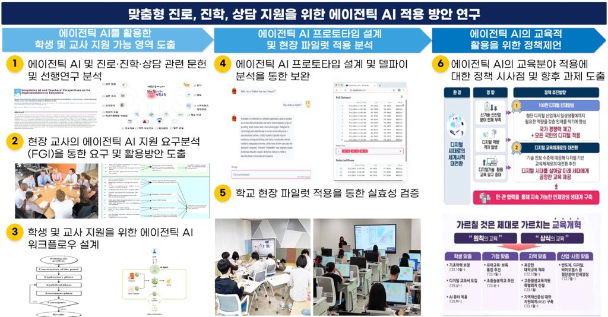
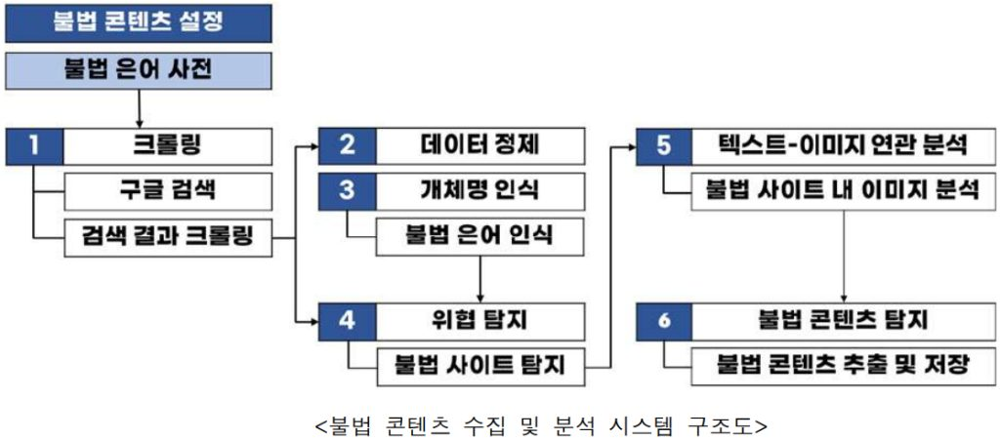
Completed
연구책임자중소벤처기업부 (KRW 50 million)
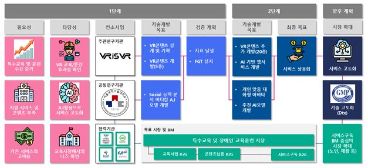
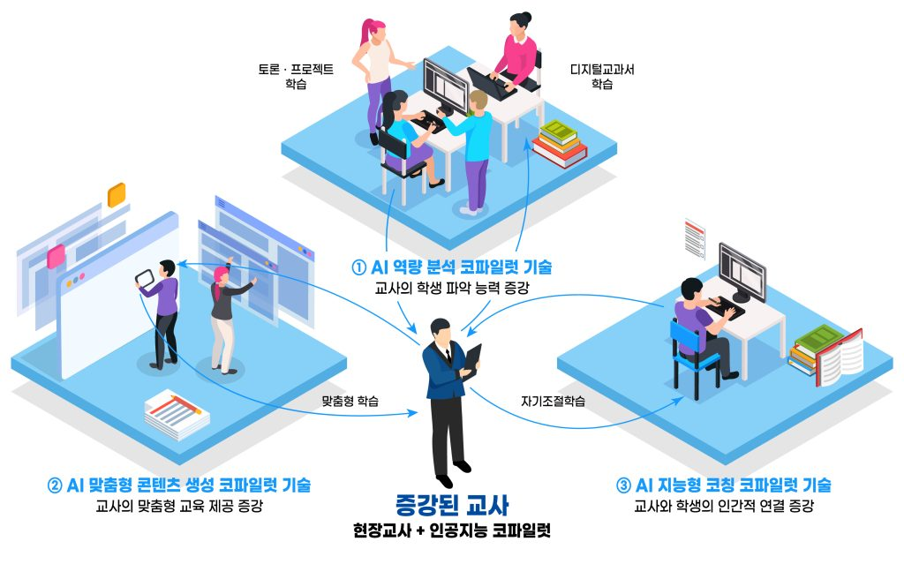
Completed
연구책임자과학기술정보통신부 (KRW 1 billion)IITP

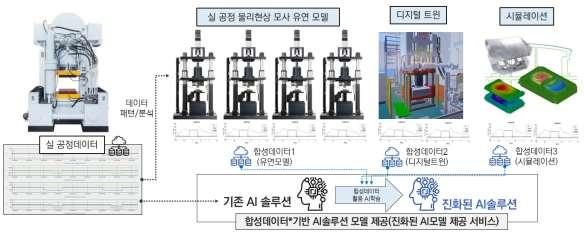
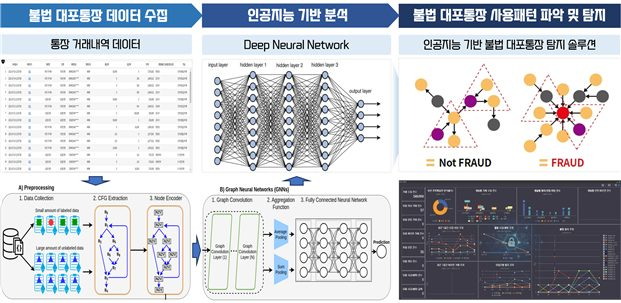
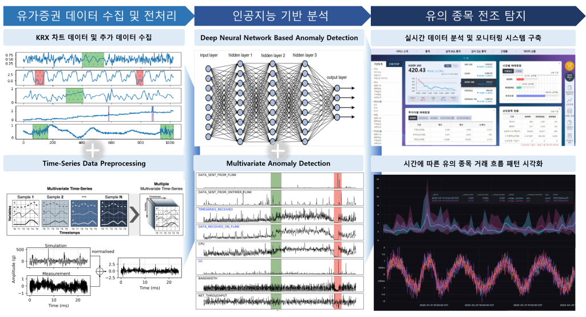
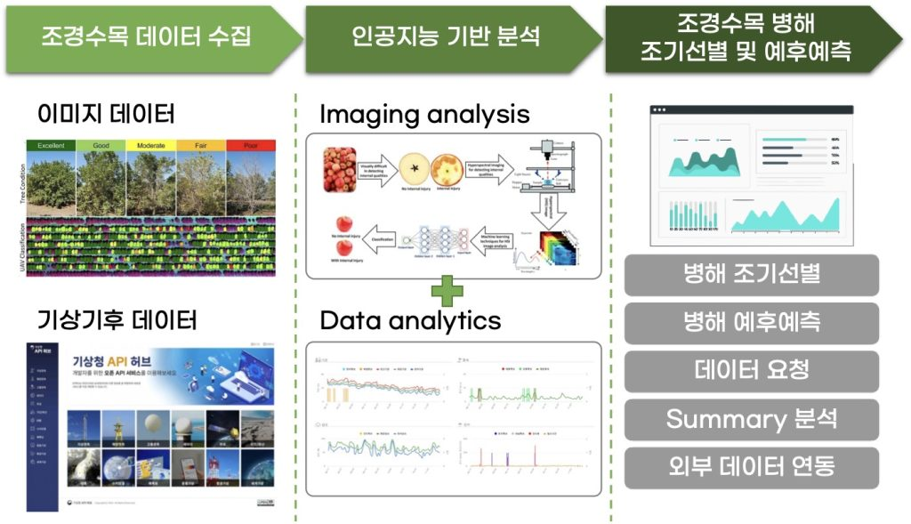
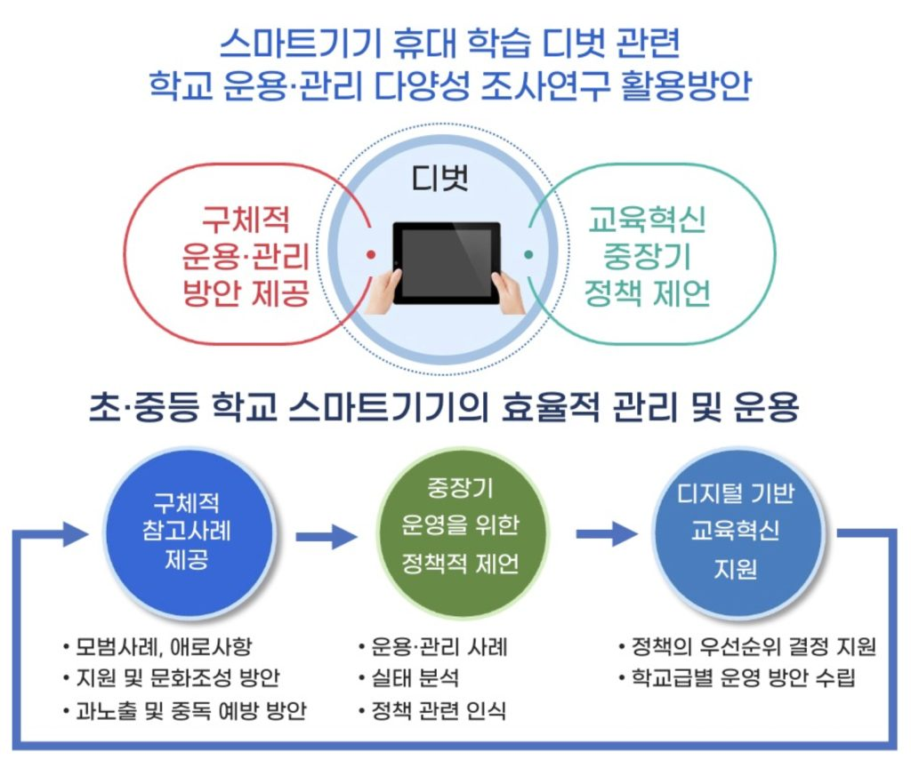
Completed
연구책임자서울특별시교육청 교육연구정보원 (KRW 33 million)Seoul Metropolitan Office of Education
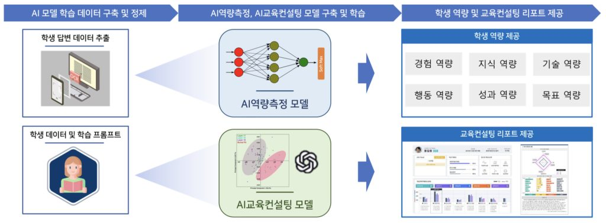
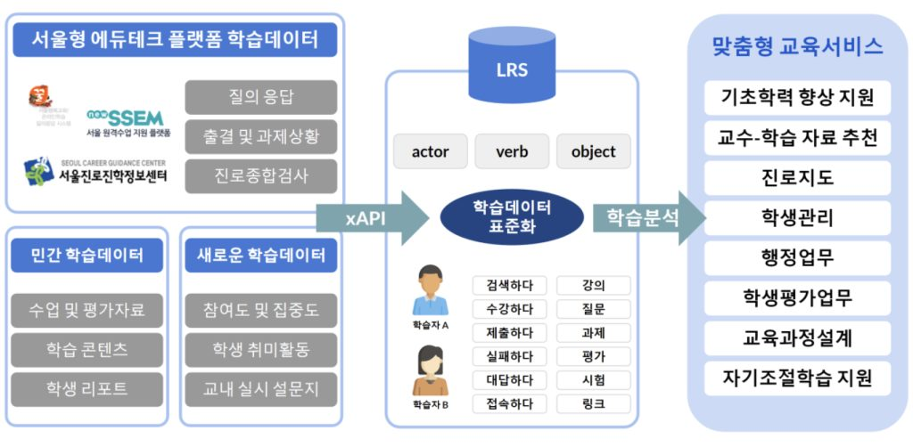
Completed
연구책임자서울특별시교육청 교육연구정보원 (KRW 50 million)Seoul Metropolitan Office of Education
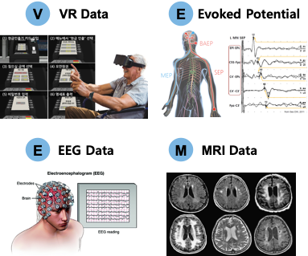

Completed
연구책임자과학기술정보통신부 (KRW 550 million)Ministry of Science and ICT
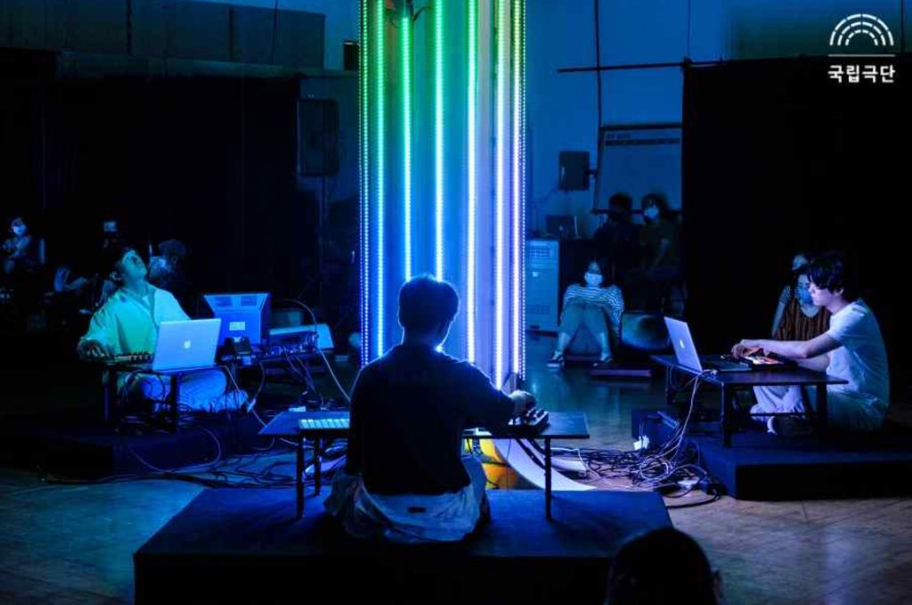
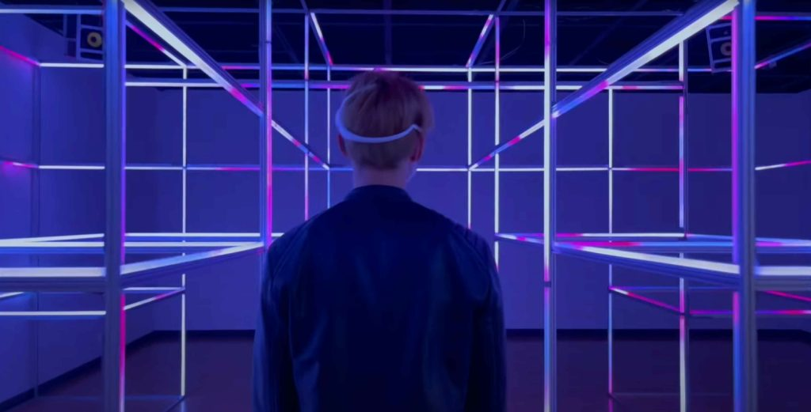
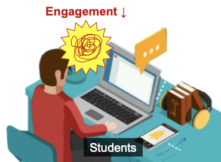
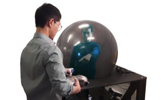
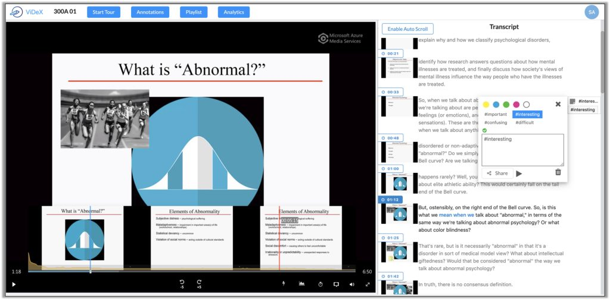
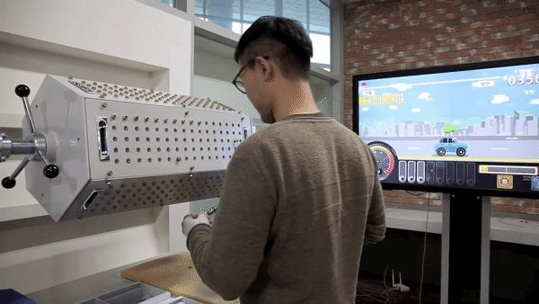
해당 연도의 과제가 없습니다.
안녕하세요, HAI Lab 안내 도우미입니다.
궁금한 것을 문의해 보세요!